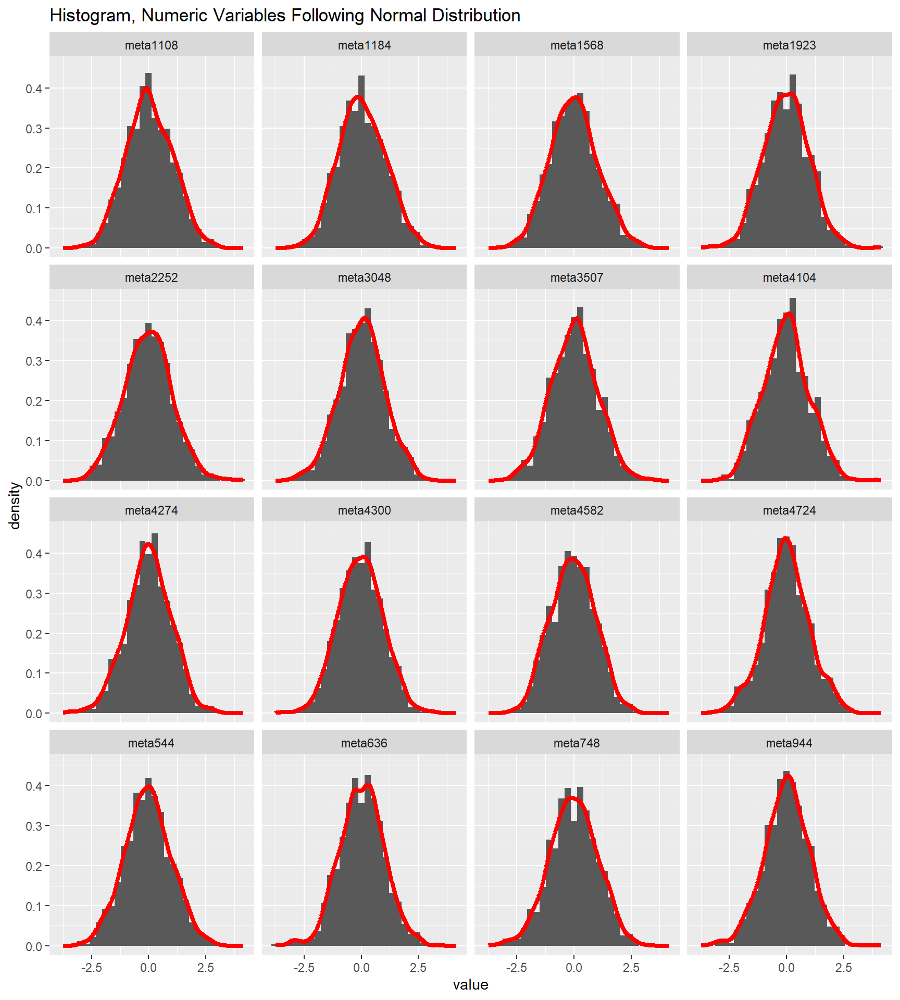
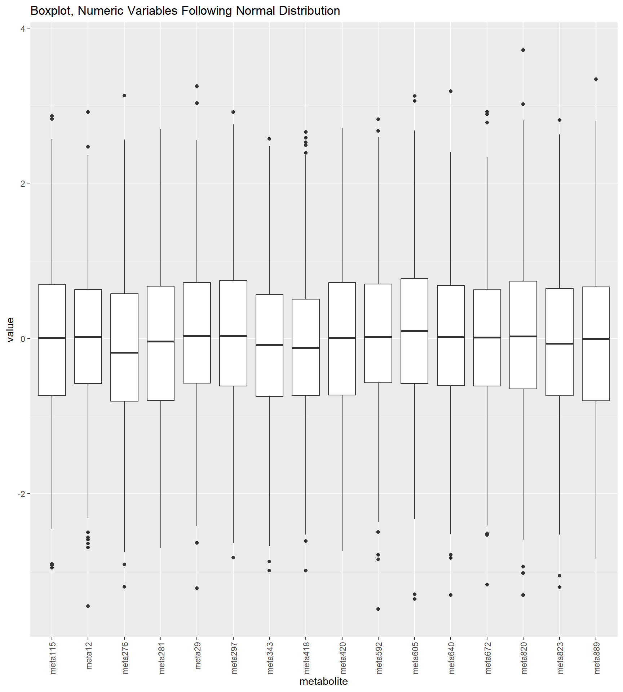
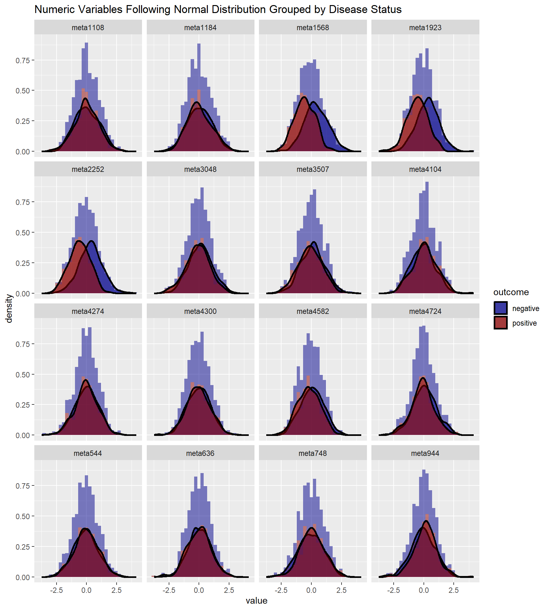
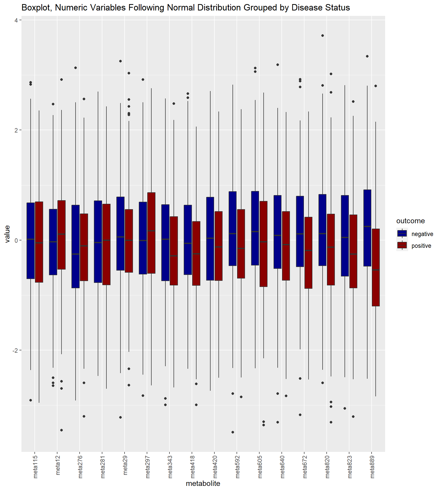
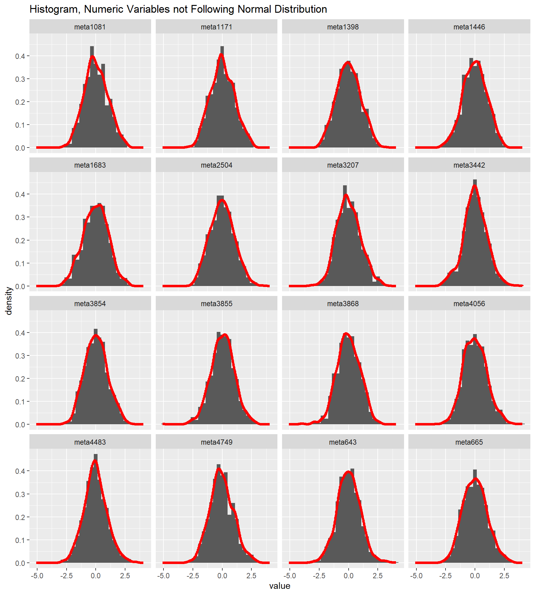
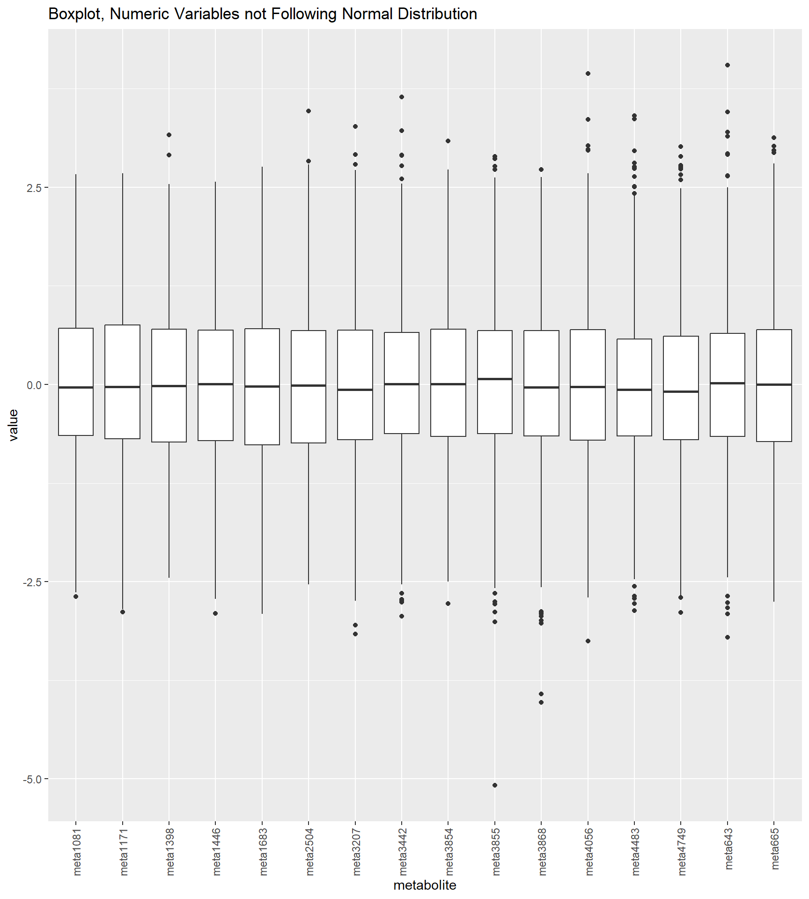
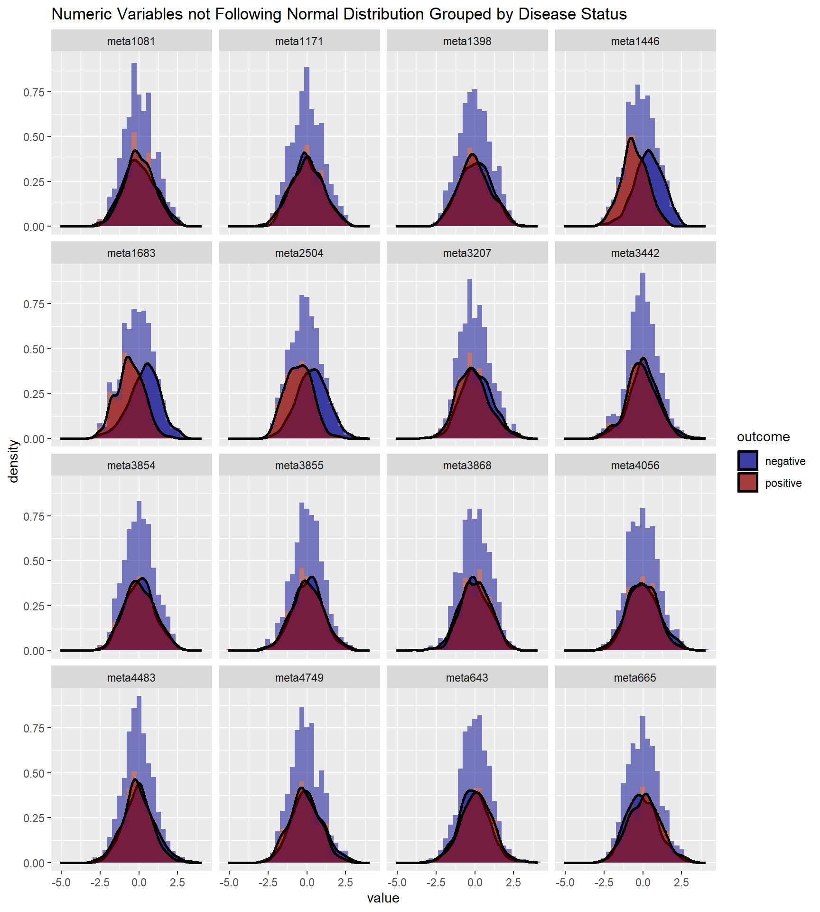
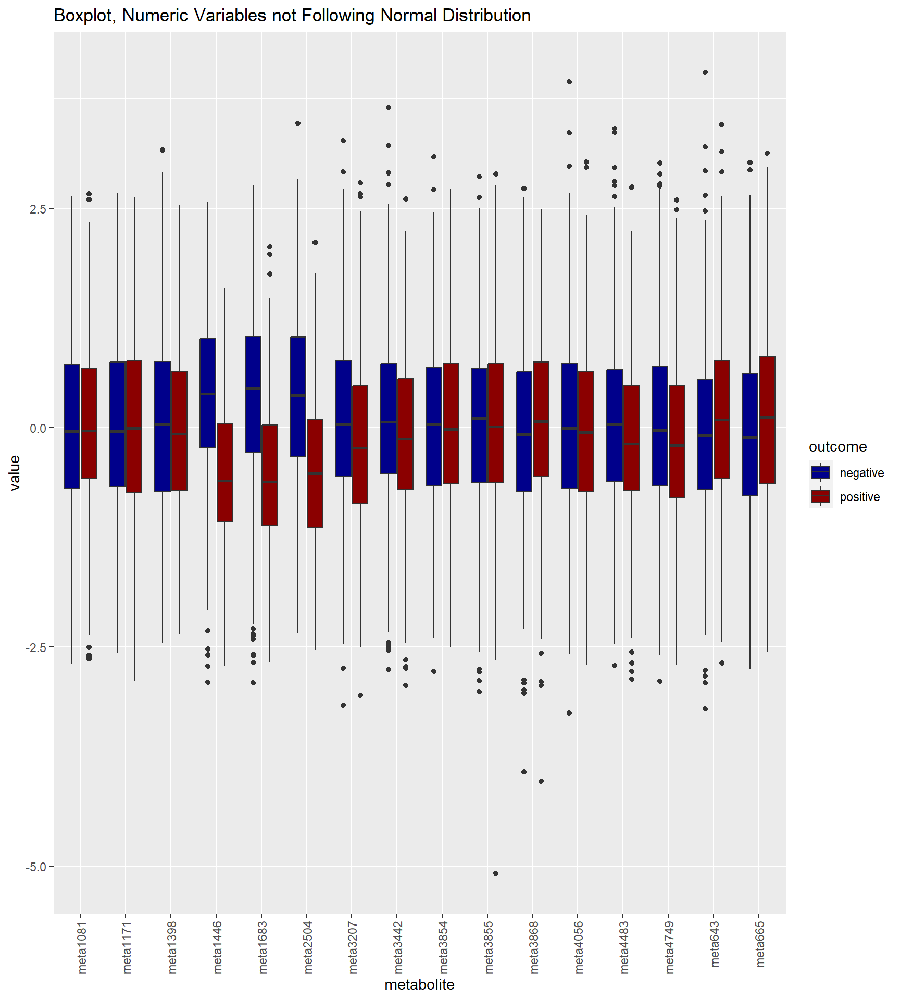
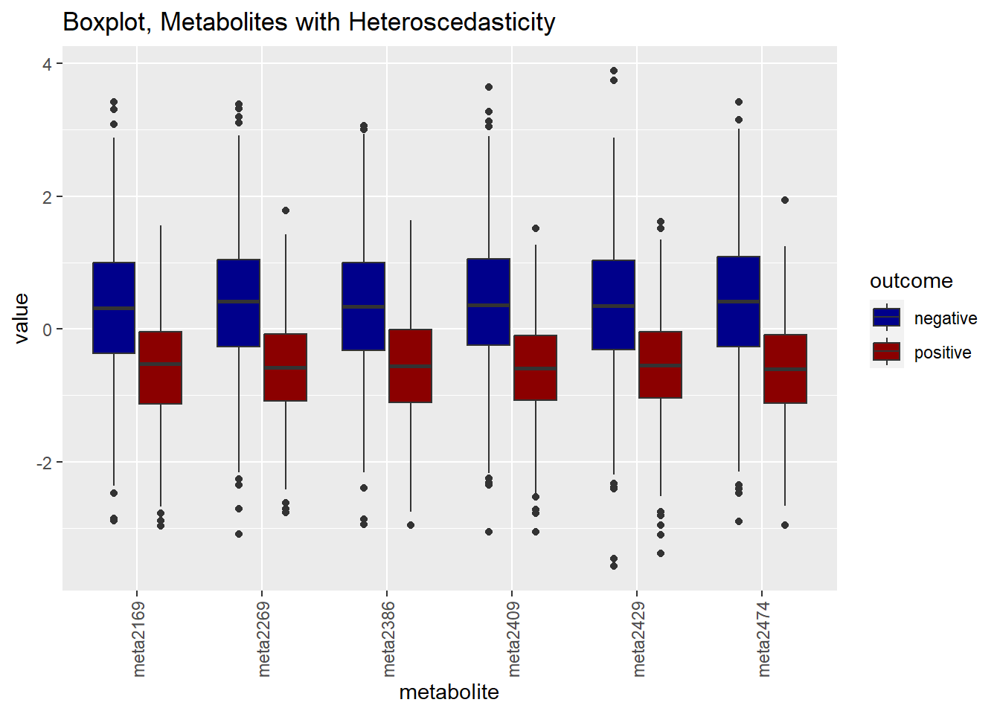
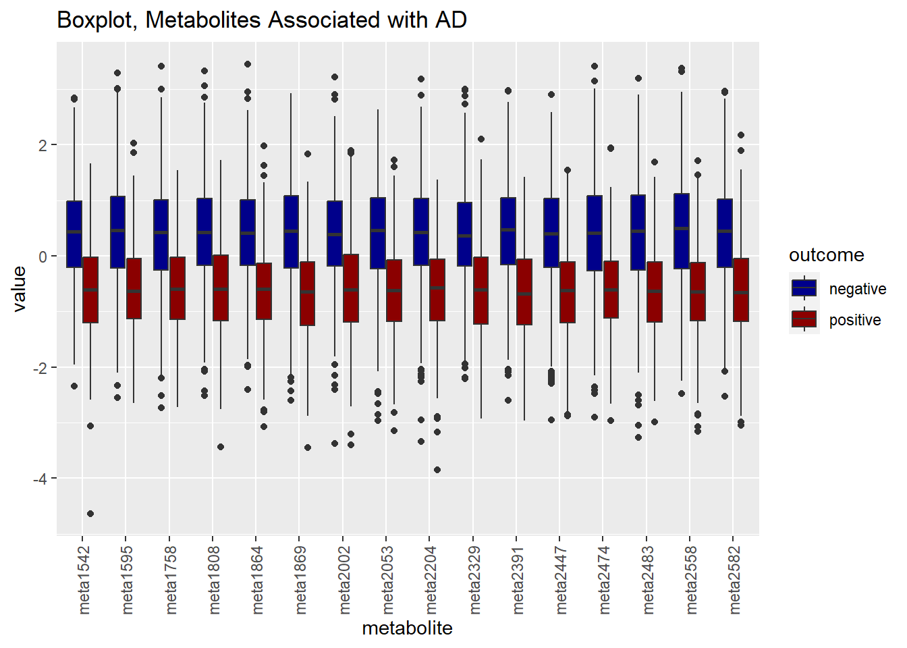

EDA
Explorative Data Analysis
Kwangmin Kim
January 3, 2023
준비중
please, read the English section first.
Variables
Function List
Code
color_function<-function(category_number){
return(
if(category_number==2){
c("darkblue","darkred")
}else if(category_number==3){
c("darkblue","darkred","yellow4")
}else if(category_number==4){
c("darkblue","darkred","yellow4","blueviolet")
}else if(category_number==5){
c("darkblue","darkred","yellow4","blueviolet","darkorange")
}else{
c("darkblue","darkred","yellow4","blueviolet","darkorange","darkgreen")
}
)
}
scale_function=function(vector=x,min=NULL,max=NULL,method){
scaling_methods<-c('min_max normalization','customized normalization','standardization')
if(method=="min-max"){
output=(vector-min(vector))(max(vector)-min(vector))
}else if(method=="customized"){
output=(max-min)*(vector-min(vector))/(max(vector)-min(vector))+min
}else if(method=="standarized"){
output=(vector-mean(vector))/sd(vector)
}else{
paste0("Error!, no such a scaling method in this module. Please, put the first word of each method you want to use in the 'method' argument among the following tests: ", paste(scaling_methods,collapse=", "))
}
return(output)
}
multiple_shapiro_test<-function(in_data){
normality_test<-apply(in_data[,unlist(lapply(in_data, is.numeric))],2,
function(x)shapiro.test(x))
temp<-data.frame(matrix(nrow=length(normality_test),ncol=4))
for (i in 1:length(normality_test)){
temp[i,]<-c(
coloumn_name=names(normality_test)[i],
statistic=normality_test[[i]]$statistic,
p_value=normality_test[[i]]$p.value,
method=normality_test[[i]]$method)
}
names(temp)<-c('column_name','statistic','p_value','method')
output<-temp%>%
mutate(p_adjusted=p.adjust(p_value,method="bonferroni"),
type=ifelse(p_adjusted<0.05,'not_normal','normal'))%>%
dplyr::select('column_name','statistic','p_value','p_adjusted','type','method')
return(output)
}
multiple_levene_test<-function(in_data,categorical_variable){
homoscedasticity_test<-apply(in_data[,unlist(lapply(in_data, is.numeric))],2,
function(x)leveneTest(x~in_data[,categorical_variable]))
temp<-data.frame(matrix(nrow=length(homoscedasticity_test),ncol=6))
for (i in 1:length(homoscedasticity_test)){
temp[i,]<-c(
coloumn_name=names(homoscedasticity_test)[i],
group_df=homoscedasticity_test[[i]]$Df[1],
residual_df=homoscedasticity_test[[i]]$Df[2],
statistic=homoscedasticity_test[[i]]$`F value`[1],
p_value=homoscedasticity_test[[i]]$`Pr(>F)`[1],
method="levene's test")
}
names(temp)<-c('column_name','group_df','residual_df','statistic','p_value','method')
output<-temp%>%
mutate(p_adjusted=p.adjust(p_value,method="bonferroni"),
type=ifelse(p_adjusted<0.05,'heteroscedasticity','homoscedasticity'))%>%
dplyr::select('column_name','group_df','residual_df','statistic','p_value','p_adjusted','type','method')
return(output)}
categorical_variable='outcome'
multiple_unpaired_t_test<-function(in_data,categorical_variable,homo_variables,hetero_variables){
homo_unpaired_t_test<-apply(in_data[,unlist(lapply(in_data, is.numeric))][,homo_variables],2,
function(x)t.test(x~in_data[,categorical_variable],var.equal=TRUE))
hetero_unpaired_t_test<-apply(in_data[,unlist(lapply(in_data, is.numeric))][,hetero_variables],2,
function(x)t.test(x~in_data[,categorical_variable],var.equal=FALSE))
unpaired_t_test<-c(homo_unpaired_t_test,hetero_unpaired_t_test)
temp<-data.frame(matrix(nrow=length(unpaired_t_test),ncol=7))
for (i in 1:length(unpaired_t_test)){
temp[i,]<-c(names(unpaired_t_test)[i],
unpaired_t_test[[i]]$estimate,
unpaired_t_test[[i]]$parameter,
unpaired_t_test[[i]]$statistic,
unpaired_t_test[[i]]$p.value,
unpaired_t_test[[i]]$method)
}
names(temp)<-c('column_name',names(unpaired_t_test[[1]]$estimate),'df','statistic','p_value','method')
output<-temp%>%
mutate(p_adjusted=p.adjust(p_value,method="bonferroni"),
type=ifelse(p_adjusted<0.05,'significant','insignificant'))%>%
dplyr::select('column_name',names(unpaired_t_test[[1]]$estimate),'df','statistic','p_value','p_adjusted','type','method')
return(output)}
main_statistical_test<-function(
in_data,method,categorical_variable,
homo_variables=NULL,hetero_variables=NULL,
fun1=multiple_shapiro_test,
fun2=multiple_levene_test,
fun3=multiple_unpaired_t_test){
test_list<-c("shapiro wilks test","levene's test","student t test")#,"ANOVA", "ANCOVA","MANOVA","wilcoxon manwhitney",'kruskal wallis test')
error_massage<-paste0("Error!, no such a test in this module. Please, put the first word of each method you want to use in the 'method' argument among the following tests: ", paste(test_list,collapse=", "))
if(grepl('shapiro',method)){
output=multiple_shapiro_test(in_data)
}else if(grepl('levene',method)){
output=multiple_levene_test(in_data,categorical_variable)
# var.test()
}else if(grepl('student',method)){
# code unpaired vs paired t test in the future
output=multiple_unpaired_t_test(in_data,categorical_variable,homo_variables,hetero_variables)
}else if(grepl('kruskal',method)){
return(error_massage)
}else if(grepl('wilcoxon'|'manwhitney',method)){
return(error_massage)
}else if(grepl('anova',method)){
return(error_massage)
}else{
return(error_massage)
}
return(output)
}
getNumericSummaryTable=function(data,group_variable,summary_variable,set_color=color_function,...){
# table
temp<-data %>%
#group_by_at(vars(...)) %>%
group_by_at(vars(group_variable)) %>%
mutate(count=n())%>%
summarise_at(vars(summary_variable,count),
list(mean=mean,
sd=sd,
min=min,
Q1=~quantile(., probs = 0.25),
median=median,
Q3=~quantile(., probs = 0.75),
max=max))%>%
as.data.frame()%>%
rename(
n=count_mean)%>%
dplyr::select(-contains('count'))%>%
as.data.frame()
names(temp)<-c("group",
sapply(names(temp)[-1],function(x)str_replace(x,paste0(summary_variable,"_"),"")))
output<-temp%>%
mutate(
variable=group_variable,
summary=summary_variable,
mean=mean%>%round(2),
sd=sd%>%round(2),
min=min%>%round(2),
Q1=Q1%>%round(2),
Q4=Q3%>%round(2),
max=max%>%round(2),
IQR_min=Q1-(Q3-Q1)*1.5%>%round(2),
IQR_max=Q3+(Q3-Q1)*1.5%>%round(2),
proportion=paste0(round(n/nrow(all_data)*100,2),"%"))%>%
dplyr::select(variable,group,summary,n,proportion,mean,sd,min,IQR_min,Q1,median,Q3,IQR_max,max)
return(output)
}
getNumericSummaryPlot=function(data=all_data,group_variable,summary_variable,set_color=color_function,...){
# plot
temp2=temp
names(temp2)[2]=group_variable
plot<-
data%>%
dplyr::select(group_variable,summary_variable)%>%
inner_join(.,temp2,by=group_variable)%>%
ggplot(aes(x=age,fill=get(group_variable),color=get(group_variable)))+
geom_histogram(aes(y=..density..),binwidth=1,alpha=0.5, position="identity")+
geom_vline(aes(xintercept=mean,color=get(group_variable)), linetype="dashed", size=1.5) +
geom_density(aes(y=..density..),alpha=0.3) +
scale_color_manual(values=set_color(temp2))+
scale_fill_manual(values=set_color(temp2))+
theme_bw()+
theme(legend.position = c(.95, .95),
legend.justification = c("right", "top"),
legend.margin = margin(6, 6, 6, 6),
legend.text = element_text(size = 10))+
guides(fill=guide_legend(title=group_variable),
color=FALSE)+
geom_text(aes(label=round(mean,1),y=0,x=mean),
vjust=-1,col='yellow',size=5)+
ggtitle(paste0("Histogram & Density, ", summary_variable, " Grouped by ", group_variable))+
labs(x=summary_variable, y = "Density")
result<-list(temp,plot)
return(result)
}Code
# load simulation data
simulated_data<-read_rds(datapath)
# simple data pre-processing
all_data<-
simulated_data%>%
mutate(
outcome=factor(outcome,levels=c("negative","positive")),
sex=ifelse(sex==0,"man","woman"),
sex=factor(sex,levels=c("man","woman")),
genotype=factor(genotype,levels=c("e3","e2","e4"))
)
# rename metabolite variables
names(all_data)[6:ncol(all_data)]<-paste0("meta",1:predictor_size)Univariable Analysis
Normality Test
Code
# raw data
normality_test_result<-multiple_shapiro_test(all_data)%>%
group_by(type)%>%
summarise(count=n())%>%
mutate(proportion=round(count/sum(count),3),
total=sum(count))%>%
dplyr::select(type,total,everything())
normality_test_result%>%
knitr::kable(caption="Summary of the Result of Shapiro Wilk Tests on Numeric Variables")| type | total | count | proportion |
|---|---|---|---|
| normal | 5002 | 5001 | 1 |
| not_normal | 5002 | 1 | 0 |
Out of 5002 numeric variables, the variables following a normal distribution are 5001 (100%) and the ones that do not are 1 (0%).
Visualization
16 Variables That Follow Normal Distributions
Code
# 16 numeric variables randomly selected
normal_variables<-
multiple_shapiro_test(all_data)%>%
filter(p_value>0.05)%>%
dplyr::select(column_name)%>%
pull%>%sample(16)
normal_data<-
all_data%>%
dplyr::select(outcome,normal_variables)%>%
gather(key=metabolite,value=value,normal_variables)
normal_data%>%
ggplot(aes(x=value))+
geom_histogram(aes(y=..density..))+
geom_density(color='red',size=1.5)+
facet_wrap(.~metabolite)+
labs(title="Histogram, Numeric Variables Following Normal Distribution")
Code

Code
normal_data%>%
ggplot(aes(x=value,fill=outcome))+
geom_histogram(aes(y=..density..),alpha=0.5)+
geom_density(size=1,alpha=0.5)+
scale_fill_manual(values=color_function(length(unique(normal_data$outcome))))+
facet_wrap(.~metabolite)+
labs(title="Numeric Variables Following Normal Distribution Grouped by Disease Status") 
Code

16 Variables That Do Not Follow Normal Distributions
Code
# 16 numeric variables randomly selected
not_normal_variables<-
multiple_shapiro_test(all_data)%>%
filter(p_value<0.05)%>%
dplyr::select(column_name)%>%
pull%>%sample(16)
not_normal_data<-
all_data%>%
dplyr::select(outcome,not_normal_variables)%>%
gather(key=metabolite,value=value,not_normal_variables)
not_normal_data%>%
ggplot(aes(x=value))+
geom_histogram(aes(y=..density..))+
geom_density(color='red',size=1.5)+
facet_wrap(.~metabolite)+
labs(title="Histogram, Numeric Variables not Following Normal Distribution")
Code

Code
not_normal_data%>%
ggplot(aes(x=value,fill=outcome))+
geom_histogram(aes(y=..density..),alpha=0.5)+
geom_density(size=1,alpha=0.5)+
scale_fill_manual(values=color_function(length(unique(not_normal_data$outcome))))+
facet_wrap(.~metabolite)+
labs(title="Numeric Variables not Following Normal Distribution Grouped by Disease Status") 
Code
not_normal_data%>%
ggplot(aes(x=metabolite,y=value,fill=outcome))+
geom_boxplot()+
scale_fill_manual(values=color_function(length(unique(not_normal_data$outcome))))+
theme(axis.text.x = element_text(angle=90, vjust=.5, hjust=1))+
labs(title="Boxplot, Numeric Variables not Following Normal Distribution")
Randomly Sampled 16 variables that do not follow a normal distribution to visualize their distributions.
Bivariable Analysis
AD vs Metabolites
Homoscedasticity Test
Code
leven_test_result<-main_statistical_test(in_data=all_data,method="levene",categorical_variable="outcome")
homo_variable<-leven_test_result%>%
filter(p_adjusted>0.05)%>%
dplyr::select(column_name)%>%
pull()%>%
unique()
hetero_variable<-leven_test_result%>%
filter(p_adjusted<0.05)%>%
dplyr::select(column_name)%>%
pull()%>%
unique()
hetero_variable_data<-all_data%>%dplyr::select(outcome,hetero_variable)%>%
gather(key=metabolite,value=value,hetero_variable)
hetero_variable_data%>%
ggplot(aes(x=metabolite,y=value,fill=outcome))+
geom_boxplot()+
scale_fill_manual(values=color_function(length(unique(hetero_variable_data$outcome))))+
theme(axis.text.x = element_text(angle=90, vjust=.5, hjust=1))+
labs(title="Boxplot, Metabolites with Heteroscedasticity")
Unpaired Two Sample Mean t Test
Code
t_test_result<-main_statistical_test(in_data=all_data,method="student",categorical_variable="outcome",homo_variables=homo_variable,hetero_variables=hetero_variable)
metabolites_associated_AD<-t_test_result%>%
filter(type=="significant"&column_name!='age')%>%
arrange(p_adjusted)%>%
dplyr::select(column_name)%>%pull
metabolites_associated_AD_data<-all_data%>%
dplyr::select(outcome,sex,genotype,metabolites_associated_AD)%>%
gather(key=metabolite,value=value,metabolites_associated_AD)
metabolites_associated_AD_data%>%
group_by(outcome)%>%
summarise(n=n(),mean=mean(value),sd=sd(value))%>%
knitr::kable()| outcome | n | mean | sd |
|---|---|---|---|
| negative | 769230 | 0.3457544 | 0.9691240 |
| positive | 525770 | -0.5343944 | 0.8796064 |
Code
top_metabolites_associated_AD<-t_test_result%>%
filter(type=="significant"&column_name!='age')%>%
arrange(p_adjusted)%>%head(16)%>%
dplyr::select(column_name)%>%pull
top_metabolites_associated_AD_data<-all_data%>%
dplyr::select(outcome,top_metabolites_associated_AD)%>%
gather(key=metabolite,value=value,top_metabolites_associated_AD)
top_metabolites_associated_AD_data%>%
ggplot(aes(x=metabolite,y=value,fill=outcome))+
geom_boxplot()+
scale_fill_manual(values=color_function(length(unique(hetero_variable_data$outcome))))+
theme(axis.text.x = element_text(angle=90, vjust=.5, hjust=1))+
labs(title="Boxplot, Metabolites Associated with AD")
Age vs Catogrical Variables
variable group summary n proportion mean sd min IQR_min Q1 median
1 outcome negative age 594 59.4% 87.89 6.23 67 72.000 84 88
2 outcome positive age 406 40.6% 80.38 5.93 65 65.375 77 80
Q3 IQR_max max
1 92.00 104.000 105
2 84.75 96.375 95Code
ad_age_summary=getNumericSummaryTable(data=all_data,group_variable="outcome",summary_variable="age")
sex_age_summary=getNumericSummaryTable(data=all_data,group_variable="sex",summary_variable="age")
genotype_age_summary=getNumericSummaryTable(data=all_data,group_variable="genotype",summary_variable="age")
age_summary=rbind(
ad_age_summary,
sex_age_summary,
genotype_age_summary)Age is known as a strong risk factor of AD or dementia. Human nerve system gets damaged as people are aged and the nerve fibrosis symptoms progress gradually (some reference, to be added after figuring out how to add bibliography in quarto). For this reason, we need to look into how the sample data are distributed in terms of age.
The table above shows the summary statistics of age grouped by the affected status, AD and non AD. The difference of age between the two groups are about -7.51, but their standard deviations are 5.93 and 6.23. Thus, it is hard to say their age in average differ in the affected status because the age variations of the two groups are overlapped. This research has two conflicting characteristics at the population level. First, the participants are the elderly whose age in average is 84.84, which indicates they are likely to develop dementia, an aging disease. Second, the data were collected from the longevity village where people live long and healthy lifes and it is expected that where will be some protective factors against dementia. These two conflicting traits may have contributed to this unclear difference.
The glaring difference of age is also shown below. As you can see, the people with a negative status a bit younger than those with a positive one.
Code
plot<- ggarrange(
getNumericSummary(data=all_data,group_variable="outcome",summary_variable="age")[[2]],
getNumericSummary(data=all_data,group_variable="sex",summary_variable="age")[[2]],
getNumericSummary(data=all_data,group_variable="genotype",summary_variable="age")[[2]],
ncol=2, nrow=2,legend="bottom")
d=lapply(all_data[,sapply(all_data,function(x)is.numeric(x))],function(x)t.test(x~outcome,data=all_data))
str(d[[1]])
lapply(d,function(x)
c('variable'=names(d),
x$estimate[1],
x$estimate[2],
'p'=x$p.value,
'lower'=x$conf.int[1],
'upper'=x$conf.int[2]))
sd=lapply(d,function(x)c('p'=x$p.value))%>%do.call("rbind",.)%>%as.data.frame%>%mutate(variable=rownames(.))
names(sd)[1]='p'
sdf=sd%>%mutate(test=ifelse(p<0.05/5000,1,0))
table(sdf$test)Metabolites vs Categorical Variable
Metabolites vs AD
t-test
Metabolites vs Genotypes
One way Anova
Metabolites vs treatment
One way Anova
Metabolites vs Genotypes
AD vs Categorical Variable
AD vs Sex
AD vs Genotypes
Code
| outcome | sex | n | mean | sd |
|---|---|---|---|---|
| negative | man | 384615 | 0.3344609 | 0.9468158 |
| negative | woman | 384615 | 0.3570479 | 0.9908026 |
| positive | man | 292670 | -0.4933901 | 0.8663950 |
| positive | woman | 233100 | -0.5858776 | 0.8932587 |
Code
| outcome | genotype | n | mean | sd |
|---|---|---|---|---|
| negative | e3 | 594405 | 0.3456064 | 0.9642017 |
| negative | e2 | 71225 | 0.5066689 | 0.9728335 |
| negative | e4 | 103600 | 0.2359751 | 0.9792923 |
| positive | e3 | 428645 | -0.5444384 | 0.8763686 |
| positive | e2 | 31080 | -0.5691303 | 0.8914347 |
| positive | e4 | 66045 | -0.4528612 | 0.8904509 |
Chisquare test
AD vs Treatment
chisquare test